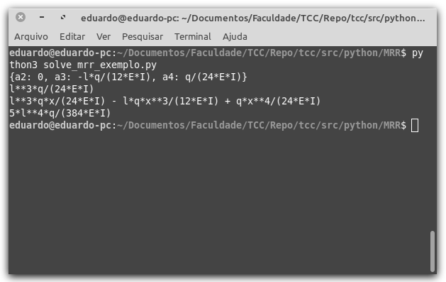
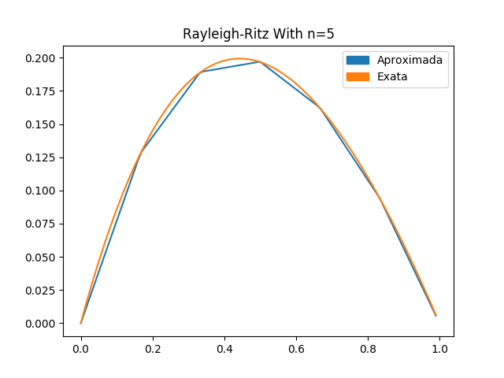
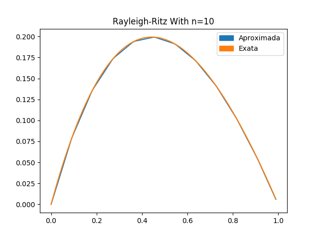

Em se tratando de programação, existem diversas formas de se trabalhar o método de Rayleigh-Ritz em diversas linguagens. Para este trabalho foi escolhida a linguagem Python por ser uma liguagem gratuita, de código aberto, e com forte apelo a computação científica. Ainda assim, existem diversas formas de se implementar algoritmos para o uso deste método. O objetivo deste capítulo é de trabalhar e exemplificar como o método pode ser implementado utilizando a linguagem de programação Python.
Voltando ao funcional \(\Pi\), definido em no do , tem-se
Derivando \(v_3\) em relação a \(x\) duas vezes,
Para a determinação dos parâmetros \(a_2\), \(a_3\) e \(a_4\), deve-se substituir \(v_3(x)\) no funcional \(\Pi\), e resolver o sistema
Tanto a derivação quanto a integração podem ser feitas manualmente ou utilizando o pacote SymPy em Python, como feito no Código 4.1.
from sympy import symbols, integrate, diff, Matrix
from sympy.solvers import solve
l, E, I, x, q = symbols('l E I x q')
a2, a3, a4 = symbols("a2 a3 a4")
v = a2 * (x**2 - l*x)
v = v + a3 * (x**3 - l**2 * x)
v = v + a4 * (x**4 - l**3 * x)
dv = diff(v, x)
dv2 = diff(dv, x)
f = (E*I*((dv2)**2)) / 2 - q * v
df_a2 = diff(f, a2)
df_a3 = diff(f, a3)
df_a4 = diff(f, a4)
eq1 = integrate(df_a2, (x, 0, l))
eq2 = integrate(df_a3, (x, 0, l))
eq3 = integrate(df_a4, (x, 0, l))
sol = solve([eq1, eq2, eq3], [a2, a3, a4])
print(sol)O Código 4.1 é executado rapidamente e o resultado é mostrado na Figura 4.1, com \(a_2=0\), \(a_3=-\dfrac{ql}{12EI}\) e \(a_4=\dfrac{q}{24EI}\). Esses resultados são exatamente os mesmos apresentados no .
O valor de \(a_1=-a_2l-a_3l^2-a_4l^3\) é determinado substituindo os valores de \(a_2\), \(a_3\) e \(a_4\). Esse processo pode ser realizado de modo manual ou, mais rapidamente, utilizando a própria linguagem, adicionando o Código 4.2 ao final do Código 4.1. Os comandos a1 = a1.subs(a2, sol[a2]) indica que a variável a1 receberá o valor de a1 substituindo o simbólo a2 pela solução do sistema encontrada no Código 4.1.
a1 = -a2*l - a3*l**2 - a4 * l**3
a1 = a1.subs(a2, sol[a2])
a1 = a1.subs(a3, sol[a3])
a1 = a1.subs(a4, sol[a4])
print(a1)É possível, ainda, construir uma função \(v(x)\) utilizando os coeficientes \(a_1\), \(a_2\), \(a_3\) e \(a_4\) (O coeficiente \(a_0\) foi ignorado devido ao seu valor ser nulo) com o Código 4.3. Utilizando, novamente, o comando subs e a função definida no Código 4.3, pode-se calcular o valor de \(v_3(x)\) em algum ponto, como, por exemplo, em \(x=\dfrac{l}{2}\). O valor \(v_3(\frac{l}{2})\) é o valor de máxima deflexão.
v = a1*x + sol[a2]*x**2 + sol[a3]*x**3 + sol[a4]*x**4
print(v)
maxdef = v.subs(x, l/2)
print(maxdef)É importante observar, no Código 4.3, que ao construir a variável v para representar a função, no primeiro coeficiente foi utilizado a variável a1, enquanto que nas demais, foi utilizado sol[a2], sol[a3] e sol[a4]. Isso se deve ao fato de que os valores para os coeficientes \(a_2\), \(a_3\) e \(a_4\) foram encontrados pela resolução do sistema, sendo a variável sol a sua solução. Já, a1 foi definida como sendo a equação do termo \(a_1\) isolado em função de \(a_2\), \(a_3\) e \(a_4\).
Os Códigos: Código 4.1, Código 4.2 e Código 4.3 são executados em sequência e, por essa razão, estão com numeração de linhas sequenciais: O Código 4.1 tendo as linhas de 1 a 25, o Código 4.2 de 26 a 30 e o Código 4.3 de 31 a 34. A Figura 4.2 mostra o resultado da execução dos Códigos Código 4.1, Código 4.2 e Código 4.3 no terminal.

Observando, no terminal da Figura 4.2, pela ordem dos comandos print executados no código, a primeira linha apresenta a solução do sistema, a segunda linha apresenta o valor do coeficiente \(a_1\), a terceira linha apresenta a função \(v_3(x)\) e a quarta linha apresenta o resultado de \(v_3(\frac{l}{2})\) que é o valor de máxima deflexão da viga.
Ressaltando, novamente, que a escolha das funções de forma utilizadas na função aproximadora são de suma importância para o método de Rayleigh-Ritz. Para o uso de matemática simbólica, como nesse exemplo, deve-se tomar ainda mais cuidado com a escolha de tais funções pois, em alguns casos, a integração simbólica toma grande custo computacional. Em casos onde a integração simbólica se torna árdua, ou até mesmo impossível, o uso de algoritmos para integração numérica é necessário.
O sistema \(M\cdot A=B\), encontrado na do , pode ser resolvido, numericamente, utilizando a linguagem de programação Python. A título de comparação serão utilizadas as funções \(p(x)=e^x\), \(q(x)=e^x\) e \(f(x)=x+(2-x)e^x\) que possui função exata \(y(x)\) conhecida dada por \(y(x)=(x-1)(e^{-x}-1)\).
Viabilizando a implementação do algoritmo, faz-se necessário relembrar \(m_{j,i}\) e \(b_j\), obtidos em e , respectivamente:
É útil, também, a definição da função de forma \(\phi_i(x)\), feita em , e sua derivada, \(\phi_i'(x)\), obtida em :
Para a resolução do problema, o primeiro passo é importar os componentes a serem utilizados. No Código 4.4 são importados os componentes numpy, utilizado para a criação de alguns intervalos numéricos espaçados. Do pacote math é importando a constante \(e\). Do pacote sympy é importado o método symbols para a definição de símbolos matemáticos, de sympy.matrices é importado o método zeros para a criação de um matriz de tamanho determinado preenchida por números zeros e de sympy.solvers é importado o método linsolve utilizado para a resolução de sistemas lineares. Por último, é importado o pacote matplotlib.pyplot como pyplot\footnote{Utilizar o comando import matplotlib.pyplot as pyplot faz com que, em vez de sempre escrever matplotlib.pyplot, se possa escrever apenas pyplot nos próximos comandos.} utilizado para plotar gráficos.
import numpy
from math import e
from sympy import symbols
from sympy.matrices import zeros
from sympy.solvers import linsolve
import matplotlib.pyplot as pyplot
import matplotlib.patches as patchesPara o uso das funções de forma \(\phi_i(x)\) e \(\phi_i'(x)\), definidas em e , respectivamente, é preciso criar um conjunto numérico espaçado (aqui o conjunto será igualmente espaçado, mas nada impede o uso de conjuntos com espaçamentos diferentes). Para a criação desse conjunto foi utilizada a função numpy.arange\footnote{A função numpy.arange cria valores espaçados uniformemente dentro de um determinado intervalo.}, em Código 4.5. No comando arange. O uso do extremo \(1.0001\) é apenas para garantir que o número \(1\) esteja no conjunto gerado. A variável n representa a quantidade de divisões a serem utilizadas no intervalo para a discretização da função exata.
n = 5
space = 1/(n + 1)
intervals = numpy.arange(0, 1.0001, space)def fi(i, x):
if x <= intervals[i - 1]:
return 0
elif x <= intervals[i]:
h = (intervals[i] - intervals[i - 1])
return ((x - intervals[i - 1]) / h)
elif x <= intervals[i + 1]:
h = (intervals[i + 1] - intervals[i])
return ((intervals[i + 1] - x) / h)
else:
return 0
def fi_diff(i, x):
if x <= intervals[i - 1]:
return 0
elif x <= intervals[i]:
return (1 / (intervals[i] - intervals[i - 1]))
elif x <= intervals[i + 1]:
return (1 / (intervals[i] - intervals[i + 1]))
else:
return 0Numericamente, as funções \(\phi_i(x)\) e \(\phi_i'(x)\) foram programadas utilizando condicionais, em Código 4.6.
No Código 4.6 o método utilizado para a integração numérica, que implementa a chamada regra do trapézio, é mostrado. Dentro do método, a variável steps define em quantos intervalos o domínio de integração será dividido. Os parâmetros opcionais *args, do método integrate, são passados para a função a ser integrada, func, e serão utilizados para passar os índices i e j quando necessário.
def integrate(func, start, end, *args):
steps = 10000
h = ((end - start) / steps)
half = h / 2
value = 0
for i in range(0, steps):
dh = func(start + h * i + half, *args)
if i == 0 or i == (steps - 1):
value += dh
else:
value += (2 * dh)
return (value * (h / 2))Para a integração numérica por meio do algoritmo implementado em Código 4.7 é preciso definir funções com os integrandos de e . Essas funções são chamadas, no código, de m_intern e b_intern, respectivamente. Na implementação do Código 4.8, os métodos m(i, j) e b(i) calculam os elementos das matrizes \(M\) e \(B\), respectivamente. Nesses métodos, é somado 1 aos índices \(i\) e \(j\) pois, na programação os elementos são indexados a partir de 0 e, na forma como definimos as funções de forma \(\phi_i(x)\), elas são indexadas a partir de 1.
def p(x):
return e**x
def q(x):
return e**x
def f(x):
return (x+(2-x)*e**x)
def m_intern(x, i, j):
value = p(x) * fi_diff(i, x) * fi_diff(j, x)
value = value + q(x) * fi(i, x) * fi(j, x)
return value
def m(i, j):
i = i + 1
j = j + 1
return integrate(m_intern, 0, 1, i, j)
def b_intern(x, i):
return (f(x) * fi(i, x))
def b(i):
i = i + 1
return integrate(b_intern, 0, 1, i)O próximo passo, consiste em criar a matriz aumentada do sistema, os símbolos que representam as incógnitas e, então, resolvê-lo. Isso é feito no Código 4.9.
M = zeros(n, n+1)
for i in range(0, n):
M[i, n] = b(i)
M[i, i] = m(i, i)
if (i - 1) >= 0:
M[i, i - 1] = m(i, i - 1)
if (i + 1) < n:
M[i, i + 1] = m(i, i + 1)
coeficients = symbols('a_0:{}'.format(n))
solution, = linsolve(M, coeficients)Utilizando a solução do Código 4.9 e a função exata \(y(x)=(x-1)(e^{-x}-1)\), é possível implementar métodos que representam a função exata e a função aproximada, plotando-as no mesmo gráfico, como feito no Código Código 4.10.
def function(solution, x):
value = 0
i = 0
for c in solution:
value += c * fi(i + 1, x)
i = i + 1
return value
def function_original(x):
return ((x - 1) * (e**(-x) - 1))
plot_interval = numpy.arange(0.0, 1.0, 0.01)
plot_original = function_original(plot_interval)
plot_aprox = []
for i in plot_interval:
plot_aprox.append(function(solution, i))
fig = pyplot.figure()
axes = fig.add_subplot(1, 1, 1)
color1='tab:blue'
color2='tab:orange'
axes.plot(plot_interval, plot_aprox, color=color1)
axes.plot(plot_interval, plot_original, color=color2)
axes.set_title('Rayleigh-Ritz With n=' + str(n))
blue_legend = patches.Patch(color=color1, label='Aproximada')
orange_legend = patches.Patch(color=color2, label='Exata')
pyplot.legend(handles=[blue_legend, orange_legend])
pyplot.show()Os Códigos: Código 4.4, Código 4.5, Código 4.6, Código 4.7, Código 4.8, Código 4.9 e Código 4.10 são sequênciais e devem ser executados dentro de um único arquivo, por isso suas numerações estão sequênciais. O resultado da execução do código para a resolução do sistema é mostrado na Figura 4.3, onde a curva de cor laranja é a solução exata e a curva de cor azul é a discretização. Para maior precisão do método, pode-se aumentar o valor da variável n do Código 4.5, por exemplo, para 10. O gráfico plotado para \(n=10\) é apresentado na Figura 4.4.
Quanto maior o valor da variável n no Código 4.5 maior a precisão, porém, com maior custo computacional. Consequentemente, quanto maior o valor de n, mais tempo o computador levará para a resolução do problema.

